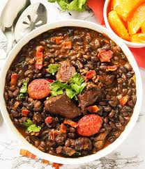

Feijoada

Flavoful black beans and pork stew Brazilian style
Ingredients
- 200 gr black beans
- 50 gr bacon (cubs)
- 50 gr calabresa sausage
- 50 gr pork ribs
- 50 gr jerked beef
- 2 Laurel leaves
- salt and black pepper
- 2 garlic cloves
- 1 onion
Steps
- Soak the beans overnight in cold water.
- Combine the beans, meat, bay leaves and water in a clay pot. Simmer for 30 min
- Sauté the garlic, onions and bacon and add the beans.
- Boil untill the stew thickens, remore the bay leaves ann serve.